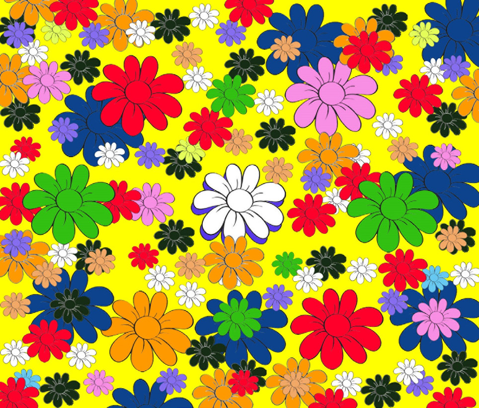
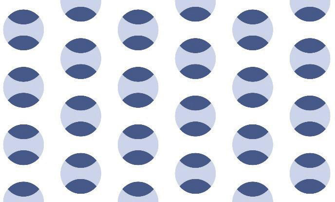

Principle of variety
This involves the use of different elements of art such as shapes, value, texture, colours and lines in a work of art to create a compelling visual impression. Figure 1.21 shows an example of an image reflecting the principle of variety.

Principle of rhythm
The principle of rhythm describes the regular repetition of visual elements such as shapes, colours, lines and forms as a significant effect to attract the attention of the viewers and instill a sense of beauty in the general work of art. Rhythm demonstrates a sense of motion in an artwork. Figure 1.22 shows rhythm.
